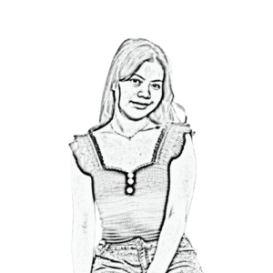
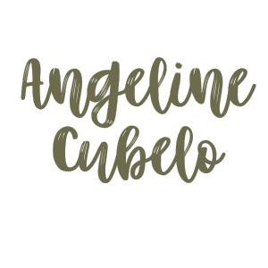

BSCS Student | '23 | Digital Artist


My name is Angeline S. Cubelo, and I was born on the 12th of January, 2005, in Quezon City.
I am currently a BS Computer Science sophomore student at the University of the Philippines - Los Baños.
I love outdoor activities and exploring new places, as they give me a sense of adventure and freedom.
Whether it’s hiking up mountains, taking long walks around campus, or simply appreciating nature,
I find joy in being surrounded by the beauty of the world.
Growing up, I was always curious and eager to learn. I had a natural inclination toward problem-solving,
which later led me to develop an interest in programming and technology. However, my journey into Computer Science
was not entirely driven by passion as it was a practical choice, influenced by the prospect of a stable career
and the ability to provide for my family. Beyond academics, I enjoy listening to music, especially indie pop, as it
helps me focus and relax. I also love reading, painting, and running which allow me to express myself and find balance
amidst the demands of my studies.
As I continue my journey, I hope to not only excel in my chosen field but also discover what truly makes me fulfilled.
Life is a constant process of learning, and I am determined to make the most out of every opportunity that comes my way.